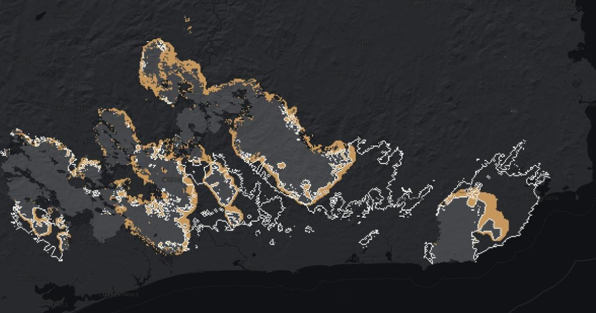

Vigil predicts where a bushfire will burn tomorrow, from where it's burning today.
Tested on the Black Summer fires of 2019–20, which it never saw while it was being built, the main model caught about 4 in 10 of the places that burnt the next day. A simple rule that pushes the fire downwind caught about 2 in 10. Both were right about a third of the time.
Watch a real fire How well does it work
Experimental predictions on past fires. Not for safety decisions. For current fires, see VicEmergency.
